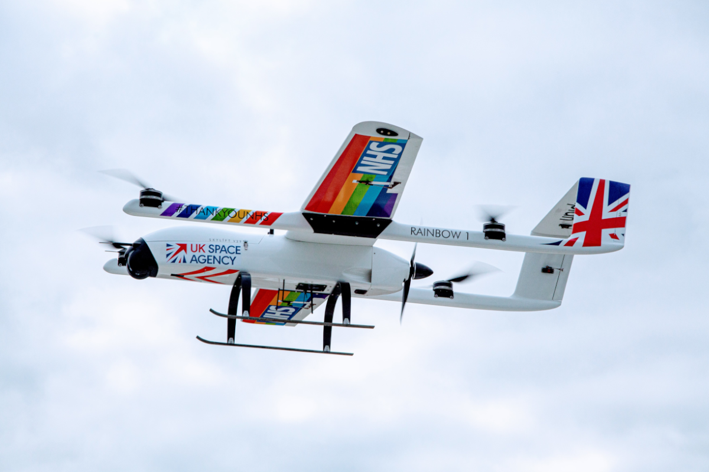

Related Projects
Introduction
 In order to 1. carefully consider possible features for the project to implement 2. consider areas of extension 3. measure progress 4. follow the merits of existing solutions, it is important that we conduct a reiview of similar existing projects.
UBI Solutions: Hospital Assets Tracking
UBI Solutions is a French software company primarily focussed on providing asset tracking solutions. It creates a variety of solutions for corporations in the food industry, laundry, retail and more. Typically solutions revolve around using RFID tags and mobile or fixed readers. [1] However, other solutions are also used and the company's focus is providing an effective solution tailored to a client.
In this review we will look at one solution, picked among many of the projects due to its similarity to the context of our own project. It was in part picked randomly from several similar projects, due to said projects also being similarly well documented with similar merits.
UBI Solutions' Hospital Assets Tracking makes use of BLE tags and beacons to track assets such as bed sheets moving throughout the hospital. They work on a gateway system where BLE gateways track individual BLE tags throughout the hospital. BLE tags each have unique identifiers that they transmit. In addition to tracking, the tags are fitted with shock, temperature and humidity sensors where relevant to track the health of the asset.
The main goals of the system are:
To free up staff time
Reducing loss of equipment due to theft
Reduce costs due to negligence
To reliably log asset usage data
Implement automatic preventative care of assets
The solution is effective, minimal and cost effective. It has a lot of the features that we would need for a hospital porter tracking system, where instead of assets we would track porters. It has some redundant features such as the sensors to detect health of the asset, however the overall principle is the same. It does however miss 1. a method to communicate to porters their tasks and 2. a method to decide which porters are optimal for tasks. Both features missing are quite essential and something we would have to explore ourselves.
Navenio: Hospital Staff Tracking
Navenio is an Oxford based company focussed on increasing ROI of hospitals. They achieve this with their smartphone based location tracking and task assignment solution to assign tasks. They have utilize a mixture of IUD, GPS and wifi to accurately track staff locations. Further to this, they utilize a task assignment system and collect logistic data with some amount of automated processing to generate recommendations to increase efficiency.
As mentioned, Navenio's solution utilizes IUD, GPS and wifi to accurately track staff location. They utilize PDR algorithms to adjust for ways a smartphone is held and deep learning based correction of inertia discrepancies due to positioning of the phone. They also make use of camera data where possible.GPD and wi-Fi is used to accurately detect when someone enters or exits the building. The system is interestingly capable of multiple floor location and tracking. Maps of the hospital are automatically built using historical tracking data of all the staff.
The main goals of the system are:
To free up staff time
Optimal assignment of tasks
Provide a solution that has no dependency on installing infrastructure
To reliably log movement data for efficiency recommendations
The solution is effective, minimal and cost effective, installation wise. Development of the algorithms and potential problems may create heavy costs however. As the solution utilizes AI to accurately location track, extensive collection of phone movement data is required and will create heavy costs.